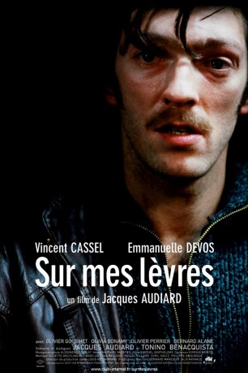

#10043 Tödliche Bekenntnisse
 
 IMDB-Wertung: 7.4 / 10
IMDB-Wertung: 7.4 / 10  Metascore: 82
Metascore: 82 
Sekretärin Carla ist überaus fleißig, aber auch hörgeschädigt und wird deshalb bei der Arbeit häufig übergangen. Eine Wende in ihrem Leben tritt ein, als ihr erlaubt wird, zu ihrer Unterstützung eine Aushilfe zu engagieren. Ihre Wahl fällt auf den Ex-Knacki Paul, der eigentlich völlig ungeeignet für den Job ist. Doch Carla sieht die Möglichkeit, sich mit seiner Hilfe an ihren Piesackern im Büro zu rächen. Paul wiederum kommt Carlas Fähigkeit des Lippenlesens gelegen, als es gilt, einen Gangsterboss um einen Haufen Geld zu erleichtern.
Jahr: 2001
Dauer: 119 Minuten
FSK:
Land: Frankreich Studio: Kino Bez GranitsTonspuren:
Untertitel: Deutsch,
Auflösung: 1080p (1920x1032) Größe: 8960 MB
Genre: Thriller, Drama, Krimi, Liebe
Regisseur: Jacques Audiard
Drehbuch: Jacques Audiard, Tonino Benacquista
Soundtrack: Alexandre Desplat
Darsteller:
 Vincent Cassel als Paul
Vincent Cassel als Paul Emmanuelle Devos als Carla
Emmanuelle Devos als Carla Olivier Gourmet als Marchand
Olivier Gourmet als Marchand- Olivia Bonamy als Annie
 Bernard Alane als Morel
Bernard Alane als Morel- Olivier Perrier als Masson
- Céline Samie als Josie
- Pierre Diot als Keller
- François Loriquet als Jean-François
- Serge Onteniente als Mammouth
- David Saracino als Richard Carambo
- Christophe Vandevelde als Louis Carambo
- Bô Gaultier de Kermoal als Le Barman
- Loïc Le Page als Quentin
- Nathalie Lacroix als L'Employée ANPE
- Laurent Valo als Le jeune sourd du café
- Christiane Cohendy als Mathilde
- Isabelle Caubère als Jeanne
- Chloé Mons als Boubou
- Patrick Steltzer als Le Haleur
- Philippe Wintousky als Le chef de chantier
- Gladys Gambie als Danseuse no. 1
- Maurine Nicot als Danseuse no. 2
- Keena als Danseuse no. 3
Datei: X:\2001\Tödliche Bekenntnisse (2001, FSK, 1920x1032).mkv seit 21.11.2018
Festplatte: Gemischt-01+Anime
 Es gibt insgesamt 102 Filme in der Gruppe '2001'
Es gibt insgesamt 102 Filme in der Gruppe '2001'